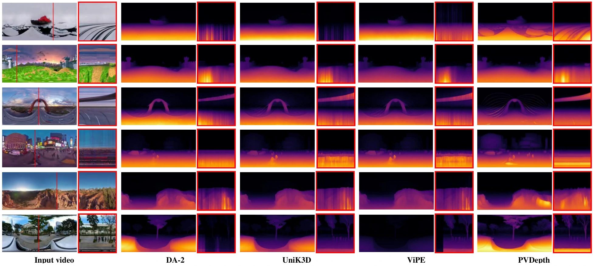

PVDepth: Panoramic Video Depth Estimation via Geometry-Aware Spatiotemporal Adaptation
ICML 2026
1 Peking University2 Pengcheng Laboratory
Abstract
Panoramic video depth estimation is pivotal for applications such as Virtual Reality and World Models. However, advancements in this field are impeded by two primary obstacles: the scarcity of large-scale training data and the unique spatiotemporal challenges of Equirectangular Projection (ERP), which hinder the direct transfer of perspective models.
In this paper, we first present PanoCARLA, a large-scale synthetic RGB-D panoramic video dataset, featuring natural motion trajectories and drone-like roaming perspectives. Building on this foundation, we propose PVDepth, an end-to-end framework adapted from perspective video depth models. To tackle ERP-specific geometric distortions and consequent non-linear temporal dynamics, we introduce two core mechanisms: (1) A Progressive Sphere-aware Noise Initialization strategy that anneals the noise distribution from planar to spherical, guiding the model to adapt to non-uniform information density; and (2) A Cube-rectified Temporal Modeling module that incorporates an auxiliary cubemap temporal branch to rectify non-linear temporal dynamics in the ERP domain. Extensive experiments demonstrate that PVDepth achieves superior performance, generating geometrically accurate and temporally consistent depth sequences.
Input panoramic video RGB
PVDepth prediction DEPTH
0:000:00 Synchronized
Far Near
Kitesurfing
PanoCARLA
Panoramic RGB-D videos
Camera trajectories
Town 03
Town 04
Town 07
PanoCARLA construction pipeline
Captured in CARLA with a two-stage pipeline that separates trajectory recording from panoramic rendering. Each frame includes panoramic RGB, depth, and camera extrinsics.
126.7KRGB-D frames
117Video clips
50.61 kmRoaming distance
6-DoFCamera trajectories
Also available: PanoCARLA-Static, a version without dynamic vehicles or pedestrians, with camera motion retained.
Spatiotemporal challenges
Non-uniform information density
ERP stretches the polar regions, allocating excessive pixels to limited effective information.
Non-linear temporal dynamics
ERP distortion turns smooth object motion into discontinuous, non-linear pixel trajectories near the poles.
Panoramic video
The streetlamp moves through the polar region as the camera passes beneath it.
Sampled frames
t = 2.00 sFrame 40
t = 2.10 sFrame 42
t = 2.20 sFrame 44
Geometry-aware spatiotemporal adaptation
Progressive sphere-aware
noise initialization
Gradually transitions from planar to sphere-aware noise, helping the model adapt to the non-uniform information density of an equirectangular image.
PSNICube-rectified
temporal modeling
An auxiliary cubemap branch models temporal information in less distorted views, then maps its features back to guide the panoramic branch.
CRTMQualitative comparisons
Depth estimation and temporal consistency on real-world panoramic videos.
One input, four depth predictions. PVDepth (top left), ViPE (top right), DA-2 (bottom left), and UniK3D (bottom right). The input appears in the center.
Original comparisonLook closer at temporal consistencySee the paper’s depth-over-time comparisons

Each red box stacks the depth values along a fixed image column over time. Temporal slices help reveal frame-to-frame flicker that a single depth image cannot show. See Figure 4 in the paper for the full analysis.
Citation
@inproceedings{song2026pvdepth,
title = {PVDepth: Panoramic Video Depth Estimation via
Geometry-Aware Spatiotemporal Adaptation},
author = {Song, Chuanxin and Peng, Peixi},
booktitle = {International Conference on Machine Learning},
year = {2026}
}